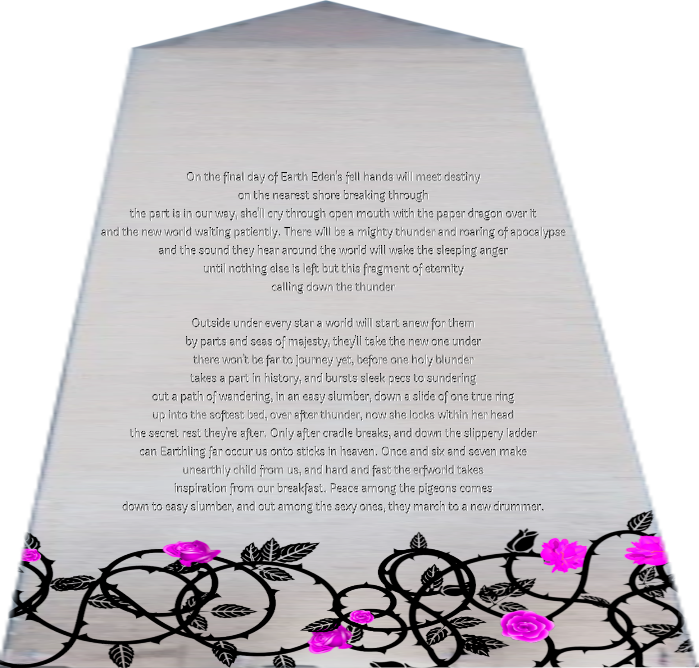

45 - Darmok
Guinan's voice is tinny out of her commbadge:
"I'll be there in a twinkle, honey."
This reveal should amuse me but suddenly I feel dull and heavy inside in a way that's nothing like the relaxer, and think of the passage about catatonic Fairies in Care and Feeding, and feel bad for feeling it. I thought Guinan was delightful at first. I (reasonably, I think) thought vaporizing a moon (if that actually happened, I'm still kind of incredulous and not processing it) about what happened and Guinan only being an accidental avatar of my abuse might have made me feel better, and it does some, but I still don't feel good.
Somewhere above us, holodeck-style heavy doors whirrclank open and shut again, and Guinan descends wearing antigrav boots like Spock did while Kirk was climbing at the beginning of Star Trek V. She kneels behind Deanna, takes her shoulders and braces on her to sit down in the grass and pulls Deanna back onto her lap as possessively as I'm holding Lyra.
"There, that's better, isn't it."
"Imzadi,"
Deanna sighs.
Aww! Ooof squeezed AWW FOREHEAD KISS!
"How are the kids taking Betazed customs?"
"Well, I think. We were just talking about boundaries."
"Good thought calling me then. How's it going, Lucy and seedling?"
"I fried your commbadge, I'm sorry," I blurt.
"I heard about Eden's computer databank inside that moon you blew up. You really know how to party when you get in the mood for it! I'll trade a commbadge for that any day--but you only blew up your commbadge, as I remember things. How does it feel to make Eden into a laughingstock on five seconds notice? Your game really didn't pull punches with what it found in that databank. Half of the talk I've been hearing is who was in on Eden's obscenities, and the other half is how much trouble they're in. Did you know you took down a half-dozen goverments? Most of the tops of them knowingly helped Eden expand itself. It's like fucking Nuremburg over again. I can't say I'm upset but it sure does make bartending boring when everyone just talks about politics."
"Oh my GOD I'm not the motherfucking chosen one," I shriek, forced by the game to express myself but it feels so good even though the emotions are sparks and battery acid.
I get the point, game. At least if I'm throwing a tantrum I'm living. Guinan and Deanna seem unfazed and Lyra just bristles with loyal sympathy, but it's still humiliating.
"That's not what I hear. Eden spent your entire whole lifetime trying to murder your heartchild. I wouldn't want that prize either, but it seems pretty chosen to me. Seems right you took the shot that unravelled its bullshit for us. I don't think it's quite sunk in yet that you actually are special, just not in the way you'd expect to be. Nothing I've told you changes the fact that you're a silly soft Fairy kid and not some impossible killing machine. The way you are special is Eden made the mistake of assuming it could make you abandon your heartchild if it just found a way to distract you, and kept trying right up to the shoreline of Limbo, and it left you some emotional baggage. Emotional baggage is hard stuff for anybody, but for you it's like processed uranium--all you have to do is ignite it, and KABLAM! Vaporize two planets and half a ringworld, plus that small moon in the bargain! Yes all that stuff existed and is gone now because it was inside the radius of that moon's explosion. You really did let yourself have at Eden when you saw what it did to you and your seedling! Anyone can see WHY you did that, but do you understand HOW?"
"No--wait. I'm a Fairy. It's because I'm a Fairy. I'm genetically engineered to be an emotional power source, and I'm sure my ancestors took that just as far as everyone takes everything else here, but...I don't know this is just a guess but I bet you can't make a soul that like can only feel one emotion and still have there be consciousness enough to be food for su'khora so I can generate hate just as much as lust and...obviously in some universes you can turn that into literal energy...um...I'm sorry, I just can't believe this. If you're trying to do something to help me which you probably are I--I wish I was as dumb as you think! The game made me act like that before with Beverly and it was awesome what the fuck is wrong with me!?"
"Nobody expects you to not be a Fairy just because you can talk to me! Do you expect me to not be El-Aurian when I'm pretending to be one of Sam Clemens' party-girls to piss off my father? I still had to have five kinds of whiskey under my counter to feel right in the world. It's great, you have enough reason to talk about how you wish you could get rid of it, but what you actually need to be free of is the expectation to be like this chosen one you're determined to not be, not be stupid or give up your mind to be free not to use it! You think you're the first Fairy who does differential equations to masturbate and still spends most of her time just being an animal? Nobody expects any more than that. You're a Fairy, and even if you were El-Aurian, what right would they have to demand that you pour drinks for them just because you're racially good at it? You got told for a lifetime, you have potential, it's your moral imperative to make use of it. Horseshit! On Earth it's a gamble, you might end up stuck in the poorhouse if you let your guard down for five seconds, but here, what's going to happen? Your seedling will get sick of fucking you?"
I can just never do anything else and still not get sick of it Mommy I can I'm a cocksleeve.
Never have I believed anything more unquestioningly than that, snuggly.
"I--"
The sentence dies as my mind fails to provide the litany of terrible consequences with which I'm fated to counter her.
Everything seems to come back to vague versions of "it would be a tragic loss" or "I would let down--" (who, exactly?).
And of course, the game has one single touch with which to touch me and shatter me, a flash-vision of a tarot card, helpfully labelled:
The Emperor.
Not my parents, not my teachers who believed in me, they would love me no matter what I did. The Emperor.
Once again, Guinan's words ring in my ears: Most of the tops of them knowingly helped Eden expand itself. She didn't say way, because I know why, it will be all the same boring old reasons.
From their perspective.
Jack's quote about how you want to just be a humble cottage while god has plans to make you into a mighty castle and there's nothing you can do to stop him plays through my mind, but this time it's got this weird ring to it that sounds a lot like about seventy bazillion voices all saying your cultural and technological uniqueness will be added to our own. Resistance is futile.
My mind rushes, putting the pieces together. Egregores seem to be some kind of collective or distributed nonpersonal (at least in Eden's case) intelligence, a lot like the Borg, riding like a parasite on human culture on Earth as some kind of computing medium. It's an odd coincidence to find Unicron's sphere of screens, the Borg collective, and now however many Locutus of Borgs wearing the crowns and medals of heads of state and industry as part of my encounters with Eden, see it written all over classical and popular culture, until you realize all of that is Earthling humanity having nightmares about the monster that's been chewing on us for thousands of years. Christianity itself could even be seen as an allegory about that being's need to devour it's "children".
We even, somehow, in of all fucking places Transformers, The Movie, had a dream about how that monster would die one day. Now, light our darkest hour!
--did Isht Visht know? Cocksleeve call your sister and ask and report when I'm not busy!
Calling, Mommy!
But what did Kup say to the newly-made Rodimus Prime, after he'd opened the Matrix and been transformed?
Hey sis! Please could you answer me something quick?
I knew you had potential, lad.
Hey sis-chan! Yeah, ask me!
It's presented as coming of age, but what happens is that young Rodimus' reward for his ascension is the task of leading the Autobots through trying to put their lives back together after millennia of war, and their returning prosperity eventually enabling Starscream's ghost to...reactivate Unicron. The wheel turns, and the players change, but the game keeps running.
Did you know my Mommy would burn Eden's computer with light like the Matrix of Leadership?
We Earthlings had another nightmare, one of so so many, about a berserk computer trying to destroy or eat us, and in the end the solution was this: The only winning move, is not to play.
Oh, yeah, the prophecy said the last hope to prevent Earth from exploding would be struck from the sky by a star losing its temper, I saw your game make Lucy turn away from you one last time and I was like ooooooh THAT'S gonna make her lose her temper when she realizes what happened and she definitely is a star YUM. Now I get what struck from the sky means!
I'm long since out of that game. Why do I care if I'm trying to win anymore?
NO. WAY. There's a prophecy? Why haven't I heard about this I studied so much stuff in the Library! I know what it means that she was the last hope to prevent Earth from exploding but--wait--bwahaha bimbo Mommy now! Air is the sky and in tarot that's mind and she's too mad to be smart I bet!
I was just thinking it meant she wasn't ambitious because she was too mad to be but she's your heartformer you know her better than I do!
A last spark hangs on, scrabbling to be heard: I WANT PEOPLE TO LIKE ME! I want to impress them and...something! I don't quite understand but it's REALLY IMPORTANT!
I'm supposed to report what you tell me that's okay right? Wait I don't understand if you answered that you knew entirely or just that like Mommy would destroy Eden's computer. Where did this prophecy come from she'll probably ask me and I want to be helpful.
"Oh..." I breathe like I'm sliding my clit into Lyra's hot waiting mouth (and it's about as hard as that suddenly).
Oh sorry I meant yes I knew she would destroy Eden by using the commbadge as a physical token. I mean obviously, right? that's how I would do it! The Prophecy came out of a seed-ghost about thirty-five hundred years back Earth's history and I guess it was warning Eden not to mess with you and your Mommy because that would make her a star that would destroy it.
I don't care if I'm trying to win. That's why I don't want to be the chosen one. I don't want the expectations...and no one here has shown them to me. They're all acting like my ability to even be a rational human being is a cute trick I can pull sometimes like a parrot can talk some?
What if that being true would be such a relief?
Oooh I wonder if Eden was trying to make Christianity already then? Maybe that seed-ghost knew that would make somebody have a big tantrum like my Mommy. That way my Mommy's still not the chosen one just the person who finally did have that tantrum.
...and if I understand what's been happening with Beverly the game will pull me back from presenting myself as anything more than that or even acting insufficiently dumb, and stop me falling off the other end and losing my ego like Eden's original hosts.
You're so kind and loyal to your Mommy! I'm taking notes here my sister can teach me.
Knowledge: I have no ability to move either way along this line. The game keeps me poised exactly between just being passion and having my reason be fun for me. I'll be able to think and enjoy speaking with Lyra and everyone, but I won't get lost in the drive to improve myself anymore now.
Awww! Sis you're so nice but I'm not in control enough to say my being loyal is something I'm doing now. We took out my clit-ring and vibrator so now I just do what she makes me.
Skin-silky softness seems to envelop me as I feel the abilities to work out the ramifications of Guinan's news report, judge if it's true, think very much about it at all, slipping away, but not because they're drowned in fae hysteria or plucked out of me by the game. The surgery is way deeper and...more surgical fuck it I don't want to come up with a synonym right now I want that fucking cake finally.
I THOUGHT you were different! Congratulations! I still think you're being kindly loyal right now though Lucy's distracted and I don't think she's making you just be a puppet she gave you commands and you followed them loyally which is why we had this conversation. I bet she'll be pleased with you for having the ability to creatively talk to me! Hey why are you still didn't she just tell you to ask me that question?
All of that mind-controlling stuff is powerful, but this I'll never get out of: I've been played into realizing there's no reason to care anymore.
I think I still don't understand why you said arise Rodimus Prime to my Mommy after she broke at the table with Guinan. Did you see the computer-thing or guess she'd make hate into light or was the prophecy specific like it said something more than just what you said "the last hope to keep Earth from exploding" and "struck from the sky"? Maybe I'm not being smart enough but how did you think of the reference?
Lyra's still dreamtalking about something or other with her sister, apparently the answer was complicated. I've missed most of the words thinking about my own stuff but it sounds like they've at least been enjoying each other's company, so I don't feel bad making her ask whatever boring thing it was I thought was important before. I stand, pulling Lyra up with me.
Whee stand!
"I want cake! You like chocolate, right Deanna?"
"Now you've done it."
Deanna poings to her feet and grins widely.
"I love cake, especially chocolate. Let me treat you to some Denobulan chocolate pound sundae--that means there's a pound of chocolate in each serving! Come on, we're leaving!"
She holds a hand down to Guinan who takes it and rises more slowly.
Oh the prophecy was exact it said a child named Blue eyes would strike at the heart of Eden and her light would expand through the aether to touch every last part of it. The child would fight off the notion of heroism in a tantrum of lighting and thunder and her fury would unmake it totally. I said okay that totally means she's doing the matrix thing with lighting and heroism means leaving your family to go and do stuff you're fated to and Eden was making her leave you and this scene is kind of just like that and then I was like OOOOOH and she got broken just how Hot Rod became Rodimus before he could open the matrix. I was like it totally works anyway and I might be wrong but maybe I'll try it how awesome and cool will it be if I'm right I bet it'll make you and Lucy so happy so I said it right when she got up from the table. The prophecy is really complete would you like me to tell you the whole thing I bet Lucy would like to hear all of it! It might be important too like it still has stuff we can't interpret but maybe you and she can.
Deanna sets out past us back toward the door we came in through with Guinan's arm around her waist possessively, and I follow, tugging Lyra along (so fun!). I feel conflicted: I was going to try out just trying to snuggle her on one side with Lyra on the other but now I'm not sure how to do it without getting near Guinan who I still feel complex about.
It's probably really unfair to treat her like the whole thing with the commbadge is her fault though I guess she did go along with it willingly and seems to have known what was happening.
As I imagine how to get near her without touching Guinan the game takes control of my head to direct my attention toward Lyra and Isht Visht's dreamtalk.
I scrunch up my eyebrows. Why should I care about a prophecy? I just figured out that the only part left of me that cares about what people think of me will be way happier delighting them with silly live porn and being nice to friends like Isht Visht than finding some kind cosmic significance.
Good job, cocksleeve, but we don't care about the prophecy. Be sure to thank her anyway.
The game makes me think the thoughts it picks, to show me how I can't sneak away from this prophecy by ignoring their dreamtalk. It will just keep returning me to it.
"Something new is troubling you. Why don't you talk about it?"
The Arboretum door whirrclanks open and shut for us, and we're in a Galaxy-class hallway that seems like it might be the actual outside of the Arboretum.
"My game keeps making me think about this prophecy thing and I can't see why it's important. The game's been pretty strict about like me only eating candy and playing games so it's really weirding me out that it suddenly has boring homework for me. Even you're supposed to be like time with a therapist because of--I mean obviously why we'd be here all night if I tried to list things I should talk to a counselor about right now and you've made it sexy fun the whole way."
"Why don't we hear the prophecy while we walk and you can talk about it with me when we get our cake?"
"I...guess. It's not like I have a choice anyway."
The game directs my thoughts to what Isht Visht and Lyra said about the prophecy already, makes me remember all of what I was ignoring.
I can't see why, none of it is any more interesting now than it was a minute ago.
"Out in the Gamma Quadrant there's a system called El-Auria--was, I guess you'd say it nowadays. They had the best whiskey...they also had something called a whistle-stone. Sounds like you need one of them right now. It whistles when you're hung up on something you can get past if you just chill out about it. Useful damn things, but I can do your whistling right now."
Guinan actually whistles, zippity doo dah, of all things, for a bar and then falls silent.
"The prophecy is actually like pretty visual but I can project a hologram where you're walking so you can read it if you'd like!"
"I guess. Like I said, I don't seem to have a choice. Sorry the game's like, hijacking our conversation. I'm sure this wasn't what you wanted to deal with, Counselor."
"Please call me Deanna. I'm here to deal with whatever is significant in your life right now. That seems to be this prophecy, judging by your emotions."
Between Guinan and Deanna, and me and Lyra, a hologram of an obelisk with words inscribed on all four sides appear. Deanna and Guinan have their own copy, floating in front of them as we walk down the hallway.
The words appear in English, but the obelisk does seem 3500 years old, cracked and marked with age and mildew around the edges. It's square, made of white marble, with sloping sides and a pointed pyramidal top, and the text is carved into the sides like some Roman something. It's a bit neoclassical, anyway. Around the bottom third of it is wrapped a silver vine with purple leaves--yes, let's have Lyra's commentary as we read together. Pluck...

The text reads:
On the final day of Earth Eden's fell hands will meet destiny
on the nearest shore breaking through
the part is in our way, she'll cry through open mouth with the paper dragon over it
and the new world waiting patiently. There will be a mighty thunder and roaring of apocalypse
"Mommy it's your guardian and the trumpet and I said there's perfekti in our way! What's the paper dragon though?"
"Good question. This first part is literally a blow-by-blow of the last part of our escaping Limbo, but we don't recognize that. Any thoughts?"
Ooh! Game I want to focus on reading this. Puppet me to raunchily like I just got massively assfucked because I so did walk along with everyone but let me control myself enough to like focus on different parts of it and stuff and play with Lyra how I want?
Suddenly my mind becomes as narrow as this hallway. I can think about the prophecy, things I think from reading it, and ways to play with Lyra. Nothing else is there to me. The game controls my legs and hips and back and makes me move in rhythm with the other people's walking, but my legs are so much longer I have to take these baby steps that make my legs and hips and breasts all bounce will silly springy dancing. Then it takes over breathing and my eyes and lids to make me moan almost silently and flirt when they both look at me.
"Hot what were you thinking about your face looks really slutty now!"
Isht Visht makes sound, she sounds happy and turned on and I think she might be responding to my fun just now, but...these aren't things I know how to think about. They were, but the game decided I didn't need them so now I can't think about them. It's the hottest feeling to just not understand...and feel totally okay with that. I glance up at the wall where my silly Fairy head thinks she 'is' and coo again, breathing deep and smiling.
Knowledge: the game can keep me like this as long as I'm enjoying it, and change what I can think about to keep me bright and happy, without my ever needing to be free like I can't quite seem to think about right now. My mind is sharp and bright like this, but outside my little pen I'm just a sexy animal.
"Ooooh okay hehe you have fun with my sister while you're like that she'll dig it."
HHaaaah Mommy yes I will especially if you entirely just are passion without even those thoughts don't you think that would be so freeing?
YES. Omigod. Who needs being a person when I can feel more of THIS. Now cocksleeve walk raunchy with me but on opposite rhythm so we rub together lots. It's like you're trying to fuck my side.
BOuncy change my steps sway my hips to catch yours moving passst me haaah hehe bouncy slide!
Knowledge: many Fairies (I should read the book) have no rational mind of any kind, narrowed in or broad, and they are definitely people anyway. Ego isn't thinking things. Ego is the experience of existing. You don't need intellect to have that.
"Heh...caught up with you, did it? Beverly's an artist, ain't she."
It's the same with Guinan! I give her a big slutty smile and feel good.
"So anyway, does anyone know what the paper dragon might be?"
This is a place where I'd think some kind of meta-thought about what's happening and the game isn't letting me but it is letting me feel my bondage that's really hot.
"That's just like, literally stuff you guys said or did? It doesn't have deep metaphors? If that's the case for the part is in our way the paper dragon should be too right? There wasn't like, paper in your cockpit or something?"
"No. I can think of metaphors like it's the curvy path on a map our journey made but...like the road was perfectly straight? You're right though, it's weird because everything else...Eden's fell hands would be perfekti, they met destiny at the nearest shore which cocksleeve your spell literally scried 'the nearest shore' right?"
My voice kind of wants to sound curvy while I talk, so I let it.
"Yes I didn't say exactly 'nearest shore' but that was the intention I said big saltwater nearest."
"How'd you get your brain back so fast? Last time Beverly gave my yearly weekly exam it took me all day to remember how to dress myself."
It's still just Guinan-shaped sounds. I smile and look down to say I don't understand but that's okay with me.
"Your game has got you, huh. Alright, focus time it is."
Being talked to feels good. I beam back, but I was saying...
"--and then the part in our way which was a tiny perfekti I used to jump our car off and then the paper dragon thing and then the new world waiting patiently is obviously Rl'yeh Sade and the mighty thunder and roaring of apocalypse is my guardian blowing the trumpet you said."
"Wait the part is our way in did you actually MAKE the Transformers reference! I've been trying to get people to take that seriously for centuries!
"I said Owner there's a perfekti in our way and she was like WRONG ITS OUR WAY IN YAH it was the coolest sis I wish you could have been there!"
"SO ENVIOUS THAT MUST HAVE BEEN SO HOT!"
Their enthusiasm makes me blush (and...my nipples hard? No it just makes me notice they are hard and feel proud of that).
"Wait, hold up. Does this mean the veil between universes is a little heavy on the elektronzzz?"
Bwahahaaha Mommy's silly.
"Bwahahaha good one Lucy. I don't know but I guess they sure had less perfekticons than you had angel charges!"
Giggles! "How do I high five you when you don't have hands?"
With a fuzzbeep, a green handprint appears on the commpanel to my left, following our motion, and I slap it dramatically--and the game takes over when I form the will to do it and makes me lift my hand up and with my head held high and laugh still on my face turn and slap the panel springing off my heels to make my body bounce as my palm connects.
That felt so slutty-cute! I my breasts go boing and my hips get tight and bounce when I moved them and it felt like...birthday cake but I'm not sure if it was eating it or being it or both but it RUELD. Trying more things like that soon. No wonder you're such a horny cocksleeve if this is what having a body like this feels like!
Mommy try leaving your eyes closed next time you do something like that it feels so intense!
Good idea good cocksleeve. Be at least as bouncy-silly as me as if you weren't already.
I read on.
and the sound they hear around the world will wake the sleeping anger
until nothing else is left but this fragment of eternity
calling down the thunder
"Holy fuck these next three lines..." I make my voice gruff and it's gooey-joyful to hear how stupid my male falsetto sounds. "ME GRIMLOCK SAY EXECUTE THEM!"
"No way it DOES mean that! Keep making transformers references that's the game here! The sleeping anger is all the people heartforming like enslaved like sharkticons on Quintessa and the way you explained your guardian you definitely stomped your foot and were like EXECUTE THEM GRAAH! Omifuck even then the problems on that planet were solved right after that by it exploding! Make a new one I can't think of anything!"
You're playing too cocksleeve and you'll blurt and be interrupty if you think of a good one.
Outside under every star a world will start anew for them
by parts and seas of majesty, they'll take the new one under
"YOU GET SHIP IF I GET TRIP!" The game makes me blurt it high-pitched and singsong (and oh my totally in my range) like Wheelie as soon as the idea crosses my mind. "That's Lyra and me fucking on the raft and you picking us up. That was definitely every star out there and I do kinda feel like the first time I fucked you is when my life actually started, cocksleeve."
"Awww Mommy I love you too!"
"Oooh Mommy I saw you seeing Isht Visht for the first time and you totally actually basically said THAT'S A SHIP!? when you saw her! I'm sorry sis it's a compliment though because parts and seas of majesty we almost missed your pickup because my Mommy was ogling you being like SO COOL HYPERSONIC SAILING SHIP and trying to figure all your parts out and that's parts and seas of majesty."
there won't be far to journey yet, before one holy blunder
"Hey I never got to see your transition scene! Did you guys dare to be stupid somehow?"
"Mommy said she wished she could have been raised feminine so she wouldn't have to leave me behind in Maine because I'd be her doll instead of imaginary friend and she kind turned femme like five minutes later? Is that stupid or wise I can't tell."
"Is that stupid or wise um Yes. That's also the part where I learned about why you like to be called a dumb little cocksleeve sometimes--omigod. We talk TV, you talk some TV? Divination lessons, cocksleeve! The references in the images in your sorcerer's portrait and stuff!"
takes a part in history, and bursts sleek pecs to sundering
"BWAHAHAHAA ACT NOW! DESTROY UNICRON! ELIMINATE EVEN THE TOUGHEST STAIN! What stain's harder to get rid of than a five o'clock shadow? Unicron has that fumanchu thing going and you probably eliminated that from your face too!"
We all giggle uproariously for a minute, then I read on:
out a path of wandering, in an easy slumber, down a slide of one true ring
A beat passes.
"I've got nothing. Anyone? Bueller? Bwahahaha SAVE FAIRIES! No, wait, we're changing movies! Lord of the Rings, go!"
"Wait you guys left before Peter Jackson made the movies! How can we do references if you haven't seen them? I know the books have stuff but all of it's like eighty pages for one single line of dialog."
"It's a strange thing, Frodo, setting out on a journey. If you don't keep your head, who knows where your feet will take you! I'm literally just letting my game puppet me to walk like this so I can focus on figuring out the prophecy. This line is me getting the game. I'll never wander lost again and the Dreams even showed me in easy slumber when I wished to see if I could wish out of this and it's kind of like a slide that's as scary and powerful as the One Ring WHEE!"
The WHEE squeaks out almost Lyra-pitched and I grin to hear my voice do that--hey, I'm doing an awful lot of thinking about being silly and fun with Lyra and Isht Visht in ways not strictly about the prophecy or playing with Lyra?
Knowledge: if it's cute and sexy fun enough the game will make exceptions that will please me. The game would be HORRIBLE if it made me miss out on flirting with my friends like this!
This Knowledge: puts a big silly grin on my face because I can feel how scandalized Hyperintelligent Lyra was accounting for this question. Let me miss this? The very THOUGHT! GASP!
"Wait you aren't controlling how you walk right now? It's super slutty your game should make you walk that way all the time! Hey Lucy's Game can you make her bounce up and down for me? I'll pay you a kiss with some groping after she nurses me!"
I lift up my arms and stick out my breasts and arch my back so it feels like my spine will break and bounce on my heels four quick times and the game gives back what control I had.
"You have such bouncy breasts! Do it again I'll keep going you can buy a whole makeout Captain let me! Aww! Are you sure Lucy's game? Alright I guess this is fun and it is going to ROCK THE WORLD of the people in the prophecy circle! They're going to be so mad it's this silly it's going to be the BEST."
Isht Visht's appreciation (and she's not wrong and how bouncy sexy good it feels like bouncing my hard clit has to be some kind of Fairy superpower) is like a glass of warm milk. I know this is supposed to make me empathize with su'khora but at this rate it's going to turn me into one in no time.
up into the softest bed, over after thunder, now she locks within her head
"Oh Mommy that's Lothlorien after Moria with drums in the deep! May this be a light to you when all other lights go out YOU SURE SHOWED EDEN A LIGHT! You're pretty like Galadriel too so that's what I think this one is."
Hang on I have to invent a new kind of blushing to respond to that compliment. Maybe I should just cry tears of belovedness for a year instead.
"Oh yeah like the ring test right OOOOAAAAAAAAH ALL SHALL LOVE ME AND DESPAAAAAAIR!!!"
"Yeah it was like that so epic you should have seen her!"
the secret rest they're after. Only after cradle breaks, and down the slippery ladder
"Okay serious time. I guess this is now, because it's us using my head to unlock the secret rest of this prophecy using what huge nerds we all are as like the encryption key, and then only after cradle breaks and down the slippery ladder is Boromir in the boat-funeral going over Rauros--"
"Hehe this is now? Now-now. Now. So what we're watching here, is....now. Mommy Spaceballs they rent the movie while they're in the movie, remember?"
"Oh yeah, to find Lone-Star. Which I note we left from Texas but what's the deal with Only after cradle breaks, and down the slippery ladder? If they're after now-now, can we interpret them?"
"Let's try and keep going! I bet we can if we keep on making references to each other like this! What if it"s the puzzle to find the references we need to keep going--"
"Omigod I'm such a dumb Fairy. My game treats me like a kid. Only after cradle breaks is the nap-time it just gave us, and--let me guess, you guys were totally watching Beverly play with me, right?" I blush for this last.
"Like, OBVIOUSLY! I have the whole recording I'll save it to you file storage when your game says you're ready!"
"So yeah I learned from that I have a slippery ladder inside me, and you saw Beverly go...down it."
"That's so romantic! I thought that scene was so sweet how she just kept squeezing you until you like freaked out and made Lyra squirm like that. What did you do to her I want to try it!"
"I came in her. I was um...about to have a seizure and I guess I triggered some like emergency thing and my clit manifest inside her pussy suddenly and I came."
can Earthling far occur us onto sticks in heaven. Once and six and seven make
How can I feel shy about this, when I'm about to do this next part? Cocksleeve, unzip my purse for me.
Unzzzip walking careful not to knock you off your bounciness.
"That means can Earthling far occur us is now! In which case--"
In which case it means a chain of obscure spur-of-the-moment Earthling geek-culture references bringing us to...half a step back, cocksleeve. There's a perfect thunk of shutting helmet, and her voice is both nasallier and...Vaderier when as I poise she finishes her sentence:
"LONE STAR!"
Game help me sell this I might leave an atom or two of dignity behind if I do it manually.
Eep step back!
With a flourish and whirl and a "PSSSHOOOM" lightsaber noise, I whip my clit out of my purse and drop into the silly-looking hands-to-crotch Spaceballs fighting stance, holding my clit there, squaring off against my--visible opponent, thank you Isht Visht for this awesome flickery Dark Helmet hologram!
He's armed with an equally literalized writhingly-tentacular "weapon", of the appropriate size for:
"I SEE YOUR SCHWARZ IS AS BIG AS MINE!"
We circle each other in the hallway poising to duel for a minute and then I implode into giggles and Helmet vanishes as Lyra and Isht Visht join me in the puddle of silliness.
"Cocksleeve, kiss on this and put it away."
Hehe pant so funny...
Take in my hands kiss reverently snuggle nestle slip inside and zzzip.
"Aaah, " I coo at her attention.
Game, why didn't you help me be ridiculous?
Knowledge: I was already totally stupid. There was nothing it could add to my silliness.
SWEET! I want treats for doing good, game!
Knowledge: I'll get them when it's time to escape to my cabin with Lyra. My horny entitlement will add to the treasure.
YEAH! MOMMY GOT ALL THE WAY STUPID! Doesn't it feel sexy to be totally safe and have nothing bad happen when you humiliate yourself Mommy? I feel like that when you hold me I want you to feel like it often that's why I made the game hold you like this.
Yes, and it's fucking working, good cocksleeve, I beam, and grab her under my arm for a bit.
YOU'RE SO PLEASED WITH ME THAT MAKES ME FEEL AWESOME!
"Okay so Earthling far occur us onto sticks in heaven is obvious really obscure references until we get to the Schwarz fight, but then what's Once, and six and seven make?"
"Seven make...that's Narnia books! No, wait, Once...upon a time in a hole in the ground there lived a Hobbit, the Last Battle, The Magician's Nephew. This is the future now because we already did the Schwarz fight like right now. No, wait, it makes more sense as The Lion, The Witch, and The Wardrobe, The Last Battle, and The Magician's Nephew, it's like, we went to a new world but Once upon a time because that's how our story started, it was the last battle like I guess we didn't technically die in a trainwreck but Earth is over and we're not going back and...it's time to make a new world? We haven't even explored this one!"
"Mommy I think it means our new life together. Remember the beginning with the raft before?"
"I know why seven makes you guys haven't seen Voyager yet but I have! BORG PROPULSION SAYS TRANS RIGHTS! You guys are making a SPACESHIP or maybe we are and it's powered by transwarp drve which is why Magician's Nephew and Lion the Witch and the Wardobe because transwarp is portaling to other dimensions! What are you going to make will it be original or maybe something Star-Trek I could see you flying a Bird of Prey sis no wait DUH ARWING obviously for the Mistress of Starfox!"
Have to build a spaceship with transwarp capability. Nothing for it, it's fate. I'd wonder where we'll get the tech, but somehow I can get myself to worry about that in the current situation.
"PLEASE MOMMY YES LET'S MAKE ONE LET'S START THE MINUTE WE GET BACK TO YOUR CABIN!"